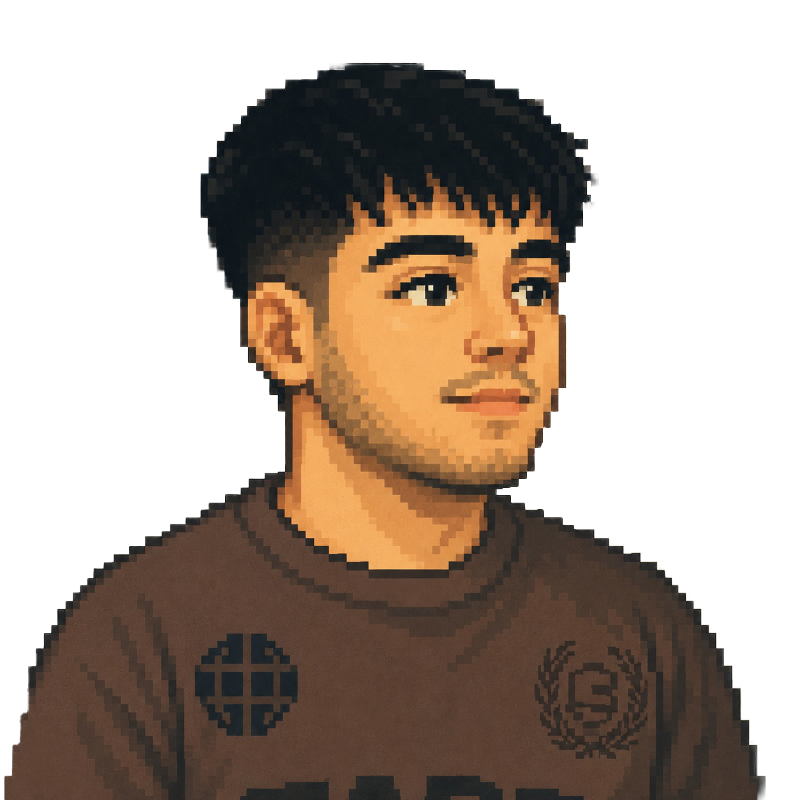

Hola, soy Nicolás Miranda — diseñador industrial apasionado por los objetos que se construyen con intención material.
Me motiva resolver problemas reales a través del diseño, combinando creatividad, tecnología y experimentación. Me interesa comprender cómo las personas interactúan con los objetos y los entornos digitales para crear soluciones funcionales y significativas.
Mi enfoque une el diseño industrial y las interacciones digitales. Me gusta experimentar, crear prototipos y trabajar en equipo con personas de distintas disciplinas para desarrollar ideas que mejoren la experiencia de las personas
Software de diseño
Código e interacción
Modelado y fabricación
Otras herramientas
Hoy
Estudiante de Diseño
Universidad Diego Portales (UDP), Chile
Estudiante de Diseño, interesado en el diseño industrial, las interacciones digitales y el desarrollo de soluciones mediante la experimentación y la tecnología.
2026
Practicante / Colaborador
Creatix
Participación en proyectos de diseño, apoyando el desarrollo de productos y soluciones mediante la creatividad, la modelación y la resolución de problemas.
Intercambio académico
Tecnológico de Monterrey (Tec), México
Intercambio académico en el área de Diseño, explorando nuevas metodologías, herramientas y perspectivas para el desarrollo de proyectos.
¿Tienes un
proyecto en mente?
Estoy disponible para proyectos freelance y colaboraciones. Escríbeme y hablamos.

Nicolás Miranda · 2025